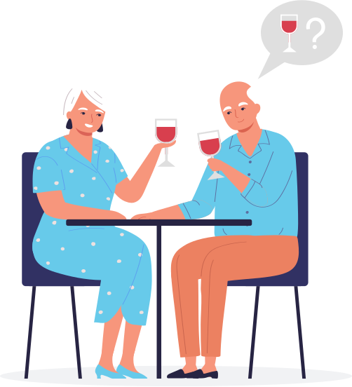
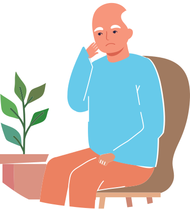
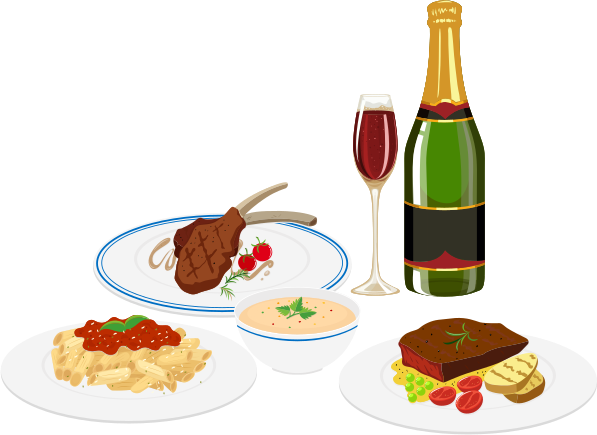
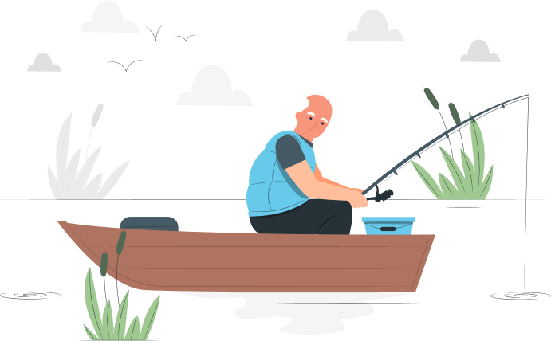
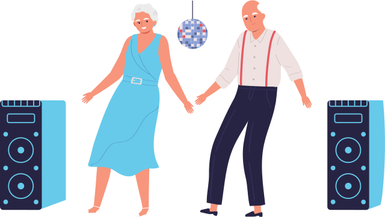

Как аденома простаты влияет на привычную жизнь: допустимы ли кофе, алкоголь, баня и секс
Мне 62 года, и я хочу поделиться своим жизненным опытом.

Как всё началось
«Моя обычная жизнь изменилась – я все время начал об этом думать, стал отказываться от поездок в гости к друзьям»

5 лет назад я начал обращать внимание, что стал часто просыпаться по ночам, чтобы сходить в туалет. Струя мочи стала намного слабее, чем раньше, иногда даже приходилось тужиться, чтобы помочиться и сам поход в туалет и днем, и ночью стал намного чаще. Моя обычная жизнь изменилась – я все время начал об этом думать, стал отказываться от поездок в гости к друзьям (вдруг, в пути «приспичит»), решил меньше пить воды, чтобы реже ходить в туалет, начал бояться, что коллеги обратят внимание, что часто хожу в туалет.
После обследования уролог обнаружил у меня аденому предстательной железы и назначил лечение. Вначале я очень испугался и думал, что это рак. Но врач мне объяснил, что это доброкачественное разрастание ткани предстательной железы, именно поэтому аденому еще называют доброкачественная гиперплазия предстательной железы. С тех пор я много прочитал об этом заболевании в книгах, интернете, подробно расспросил своего лечащего доктора в поиске ответа на главный для себя вопрос - как же с этим заболеванием жить дальше?
Сейчас я понимаю, что мне очень повезло — я вовремя обратился к врачу. Именно он объяснил мне, что если аденому не лечить, то все это может перерасти в более значительные проблемы с мочевым пузырем или почками, и даже к необходимости операций. Поэтому я пью лекарства, которые мне прописал врач, тем более что это просто, так как самый главный препарат, который он мне выписал — оригинальный тамсулозин, принимают всего 1 раз в день. Лечиться нужно всю жизнь, но, к сожалению, таковы многие болезни – и от давления, и для нормального уровня глюкозы, и при многих других состояниях лекарства принимают постоянно.
Жизнь продолжается
«Можно ли пить при аденоме простаты чай, пиво, крепкий алкоголь? А ходить в баню?»

Лечение назначено, а как же привычная, обычная жизнь? Можно ли пить при аденоме простаты чай, пиво, крепкий алкоголь? Можно ли заниматься сексом при аденоме простаты? А ходить в баню? Все эти вопросы меня очень волновали!
В начале лечения врач объяснил, что в рационе важно сократить сладости и мясные блюда, в больших количествах крепкий чай и кофе при аденоме простаты вредны, а аденома простаты и алкоголь совместимы только при разумном и умеренном употреблении спиртного.
Сейчас же, спустя время, я вижу, что лечение приносит свои результаты, я стал реже ходить в туалет и появились ночи, когда я не просыпаюсь от желания побежать в туалет, и, конечно, уже хочется делать себе поблажки.
Самое главное правило, которое рассказал мне доктор, — не пить много жидкости за 2-3 часа до сна, поэтому я для себя сделал вывод: днем лучше всего пить простую воду или некрепкий чай, и всё-таки можно пить кофе при аденоме простаты, но немного. Поэтому я позволяю себе чашечку кофе, но пью его только утром или днем.
Увлечения и маленькие радости
«Мой главный страх— перестать чувствовать себя мужчиной»

Мой главный страх— перестать чувствовать себя мужчиной. Все думал, при аденоме простаты можно заниматься сексом или нет? Оказалось, что диагноз может и не влиять на мои близкие отношения с любимой женщиной, а секс при аденоме простаты даже полезен. Уролог рекомендует в моем возрасте 1-2 раза в неделю «дарить любовь» своей ненаглядной. Вот и смеёмся с женой, что нужно регулярно выполнять врачебные рекомендации.
Я часто езжу на дачу, летом вообще практически постоянно живу там: дом, банька, река рядом— что еще нужно для счастья?! Раньше каждые выходные устраивал себе маленький праздник: ходил на рыбалку, потом парился в бане, жарил на мангале рыбу, выпивал рюмочку чего-нибудь горячительного.
Теперь же задумался: можно ли алкоголь при аденоме простаты и не слишком ли часто я выпиваю. Поэтому первое время после определения диагноза я совсем отказался от спиртного и «рыбачил на сухую». Сейчас, при значительном улучшении своего состояния и правильном лечении, я могу выпить рюмочку-другую по праздникам. Жизнь одна, радостей не так много, а алкоголь при аденоме простаты у мужчин, думаю, в небольших количествах можно: и стресс снимет, и настроение поднимет.
Что же касается бани, то пришлось узнать у доктора с аденомой простаты можно в баню или нет, и можно ли париться при аденоме простаты. Оказывается, что если самочувствие хорошее, то можно и в парилку, а при ухудшении состояния и частом мочеиспускании, лучше не париться в бане при аденоме простаты. Главное не переохлаждаться после бани, не обливаться холодной водой и не сидеть на холодном.
Заключение
«Сейчас, оглядываясь назад, хочу дать несколько советов мужчинам»

Сейчас, оглядываясь назад, хочу дать несколько советов мужчинам:
· При появлении первых «сигналов» от предстательной железы — сразу идите к врачу. Чем раньше начнете лечение, тем оно проще будет и в дальнейшем можно избежать операций.
· Не занимайтесь самолечением, только уролог может подобрать нужное именно вам лекарство и выписать рецепт.
· Жизнь с аденомой во многом может быть прежней и со своими радостями от чашечки кофе, от секса с любимой женщиной, от выходных на даче.
И всем мужчинам я желаю здоровья и оставаться мужчинами!